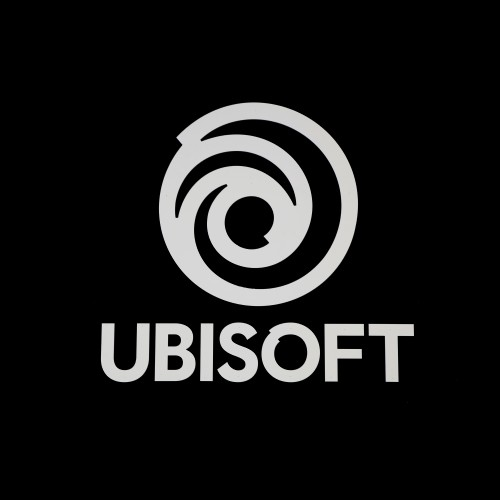

Assassin's Creed Black Flag Resynced
Genres: Open-World Action
Website
Developer: Ubisoft
Publisher: Ubisoft
Platforms: PC, PlayStation 5, Xbox Series X
Released: 2026, July 9
Rated: Not Rated
BECOME A FEARSOME PIRATE Strike fear in your foes as you board and sink enemy vessels as Edward Kenway, captain of the Jackdaw. Whether blending into crowds or leading daring assaults, switch between silent takedowns and fierce brawls as you effortlessly wield swords, pistols, and the Hidden Blade. With a cast of historical pirate legends at your side, defy empires amidst the age-old conflict opposing Assassins and Templars. A CLASSIC REBUILT FOR AN ENHANCED EXPERIENCE Combat has been rebuilt for more dynamic encounters, emphasizing parries and takedowns, while stealth and parkour have been improved for smoother escapes and assassinations. Continuously upgrade the Jackdaw to face powerful enemy ships with enhanced naval mechanics featuring new alternate fire modes. Quality-of-life additions also address previous pain points, ensuring your experience is improved. THE CARIBBEAN LIKE NEVER BEFORE Whether you’re sailing the open seas or journeying across untamed lands, discover a seamless open world built with the latest Anvil engine. Take in sweeping vistas as you brave stormy waters, dive into underwater shipwrecks, or push through dense tropical jungles. Enhanced by features such as Dolby Atmos and ray tracing, every scene feels more immersive, bringing the world’s beauty to life. EXPANDING EDWARD’S ADVENTURE Building on top of the original story, Assassin’s Creed Black Flag Resynced introduces exclusive new content. Familiar faces will return, with new storylines dedicated to fan-favorite characters such as Blackbeard and Stede Bonnet. Unexpected allies will also cross your path, as three officers join you on your journey as part of the main narrative. More surprises await such as new sea shanties, pets, a photo mode, and more.